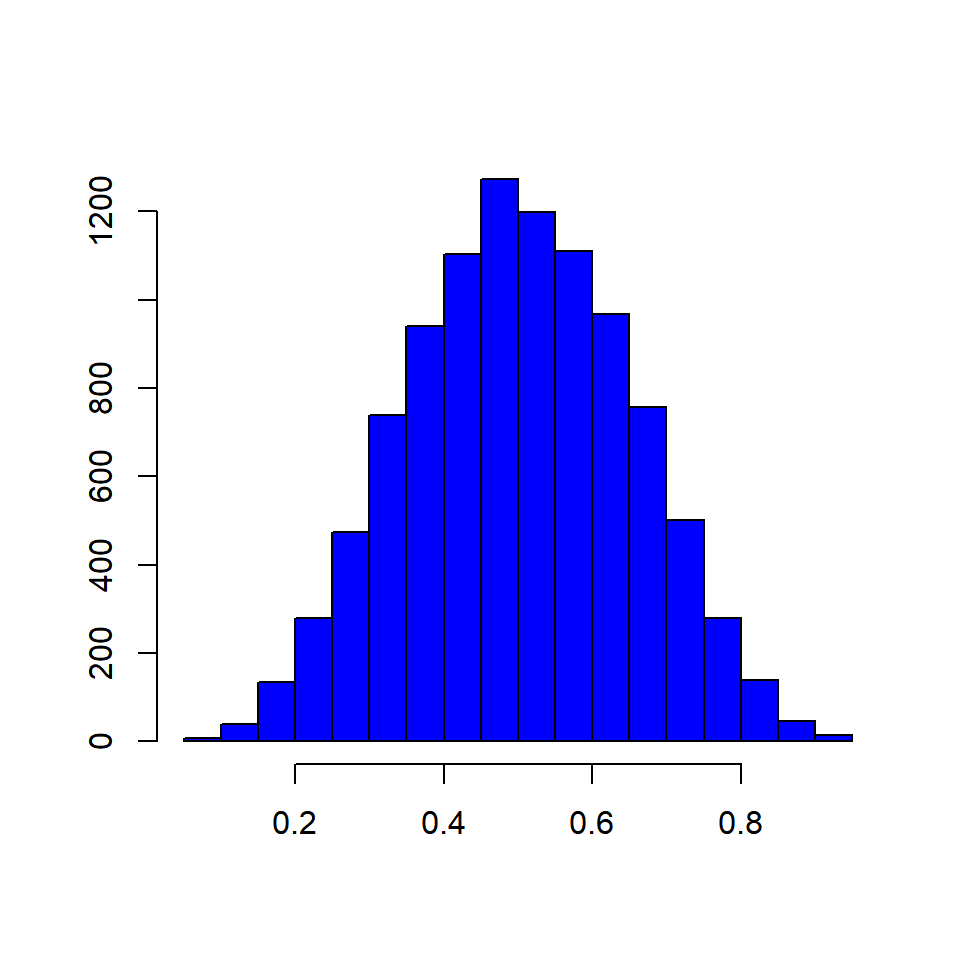
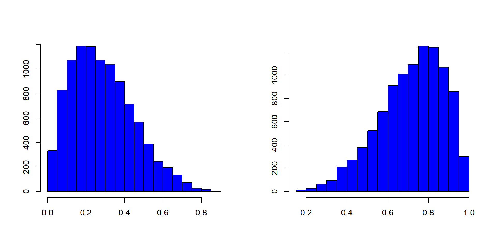
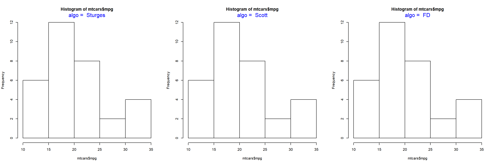
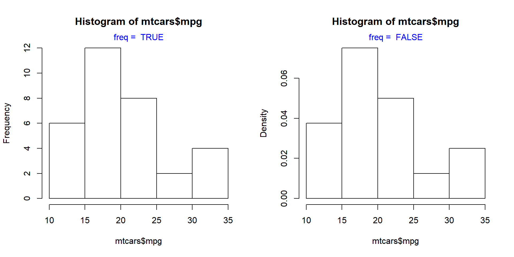
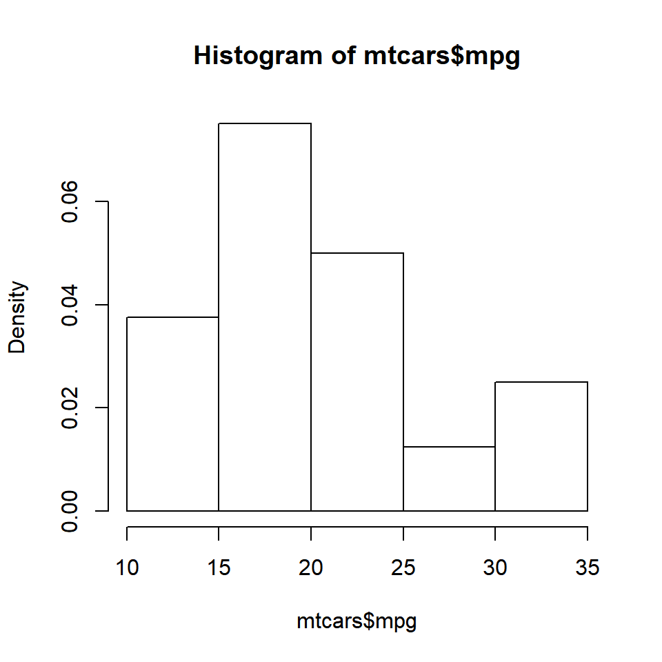

This is the seventh post in the series Data Visualization With R. In the previous post, we learnt about box and whisker plots. In this post, we will learn about histograms.
Introduction
A histogram is a plot that can be used to examine the shape and spread of continuous data. It looks very similar to a bar graph and can be used to detect outliers and skewness in data. The histogram graphically shows the following:
- center (location) of the data
- spread (dispersion) of the data
- skewness
- outliers
- presence of multiple modes
To construct a histogram, the data is split into intervals called bins. The intervals may or may not be equal sized. For each bin, the number of data points that fall into it are counted (frequency). The Y axis of the histogram represents the frequency and the X axis represents the variable.
Distributions
Before we learn how to create histograms, let us see how normal and skewed distributions look when represented by a histogram.
Normal Distribution

Skewed Distributions

Basics
Histograms are created using the hist() function in R. The minimum input required to create a bare bones histogram is a continuous variable. Below is an example:
The hist() functions returns details of the histogram which can be accessed by assigning the histogram to a variable. Let us assign the above histogram to a variable h and use the $ symbol to access the details stored in the variable.
# store the results of hist function
h <- hist(mtcars$mpg)# display number of breaks
h$breaks## [1] 10 15 20 25 30 35# frequency of the intervals
h$counts## [1] 6 12 8 2 4# frequency density
h$density## [1] 0.0375 0.0750 0.0500 0.0125 0.0250# mid points of the intervals
h$mids## [1] 12.5 17.5 22.5 27.5 32.5# varible name
h$xname## [1] "mtcars$mpg"# whether intervals are of equal size
h$equidist## [1] TRUEBins
The hist() function creates equidistant intervals by default. We can specify the number of bins using the breaks argument.
The below plot displays histograms with different number of bins:
Intervals
If we want to create histograms with specific intervals, the breaks argument can be supplied with the intervals.

If you observe the Y axis, it does not represent frequency any more. Instead, it represents the frequency density. What is frequency density?
Frequency Density
Frequency Density = Relative Frequency / Class Width
Relative Frequency = Frequency / Total Observations
h <- hist(mtcars$mpg, breaks = c(10, 18, 24, 30, 35))frequency <- h$counts
class_width <- c(8, 6, 6, 5)
rel_freq <- frequency / length(mtcars$mpg)
freq_density <- rel_freq / class_width
d <- data.frame(frequency = frequency, class_width = class_width, relative_frequency = rel_freq, frequency_density = freq_density)
d## frequency class_width relative_frequency frequency_density
## 1 13 8 0.40625 0.05078125
## 2 12 6 0.37500 0.06250000
## 3 3 6 0.09375 0.01562500
## 4 4 5 0.12500 0.02500000When multiplied by the class width, the product will always sum upto 1.
sum(d$frequency_density * d$class_width)## [1] 1We will learn more about frequency density in a bit. Before we end this section, we need to learn about one more way to specify the intervals of the histogram, algorithms. The hist() function allows us to specify the following algorithms:
- Sturges (default)
- Scott
- Freedman-Diaconis (FD)
In the below plot, we examine how th algorithms work:

Frequency Distribution II
Let us come back to frequency density. If you want the Y axis of the histogram to represent frequency density instead of counts, set the freq argument to FALSE.

The same result can be achieved by using the probability argument as well. It takes only logical values as inputs and the default is FALSE. If set to TRUE, the Y axis will represent the frequency density instead of counts.
hist(mtcars$mpg, probability = TRUE)
Color
To add colors to the bars of the histogram, use the col argument. If the number of colors specified is less than the number of bars, the colors are recycled. Below are a few examples:
Single Color

Different Colors
Recycled Colors
Border Color
Colors can be specified for the borders of the histogrambars using the border argument.
Different Colors
Labels
In certain cases, we might want to add the frequency counts on the histogram bars. It is easier for the user to know the frequencies of each bin when they are present on top of the bars. Let us add the frequency counts on top of the bars using the labels argument. We can either set it to TRUE or a character vector containing the label values. Let us look at both the methods.
Method 1
Set labels to TRUE.
Method 2
Specify the label values in a character vector.

Before we end this post, let us add a title and axis labels to the histogram. If you do not know how to add title and axis labels, refer to this post.
hist(mtcars$mpg, labels = TRUE, prob = TRUE,
ylim = c(0, 0.1), xlab = 'Miles Per Gallon',
main = 'Distribution of Miles Per Gallon',
col = rainbow(5))Summary
In this post, we learnt how to construct and use histograms to examine the underlying distribution of a continuous variable. Specifically, we learnt how to:
- create a bare bones histogram
- specify the number of bins/intervals
- represent frequency density on the Y axis
- add colors to the bars and the border
- add labels to the bars
In the next post, we will learn to add legend to plots.